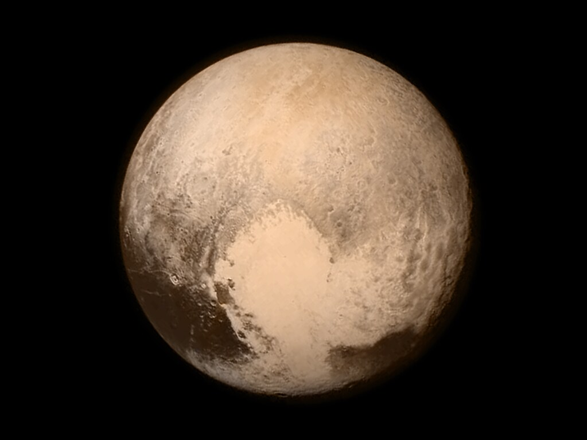

Plutón
Plutón también tiene una luna llamada Caronte, que es casi la mitad del tamaño de Plutón y está tan cerca que los dos cuerpos están en resonancia gravitacional, lo que significa que siempre muestran la misma cara el uno al otro. Plutón ha sido objeto de estudio desde la década de 1970, cuando fue visitado por la sonda espacial Voyager 2, y más recientemente por la sonda New Horizons en 2015, que proporcionó datos detallados sobre su superficie y atmósfera.
Tabla de datos
| Característica | Valor |
|---|---|
| Distancia al Sol | 5,874 millones de km |
| Diámetro | 2,377 km |
| Masa | 1.309 × 10^22 kg |
| Gravedad | 0.62 m/s² |
| Temperatura media | -229 °C |
| Composición atmosférica | Nitrógeno, metano, monóxido de carbono |
| Presión atmosférica | 0.00001 atmósferas |
| Velocidad de rotación | 6.4 días |
| Número de lunas | 5 conocidas (Caronte, Estigia, Cerbero, Nix, Hidra) |
Plutón es un planeta enano en el sistema solar exterior y es el más grande de los objetos en la región del cinturón de Kuiper. Fue considerado el noveno planeta del sistema solar antes de ser reclasificado como planeta enano en 2006. Plutón tiene una órbita excéntrica y una atmósfera delgada compuesta principalmente de nitrógeno, metano y monóxido de carbono. Su superficie está cubierta de hielo de metano y nitrógeno.